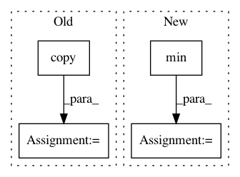

46cb0b5b2cf2d836a2cf96be95d4e25a4004675e,tslearn/clustering.py,KShape,_fit_one_init,#KShape#Any#Any#Any#,729
Before Change
n_samples, sz, d = X.shape
self.labels_ = rs.randint(self.n_clusters, size=n_samples)
if initial_centroids is not None:
self.cluster_centers_ = initial_centroids.copy()
else:
self.cluster_centers_ = rs.randn(self.n_clusters, sz, d)
self._norms_centroids = numpy.linalg.norm(self.cluster_centers_, axis=(1, 2))
old_inertia = numpy.inf
for it in range(self.max_iter):
old_cluster_centers = self.cluster_centers_.copy()
self._update_centroids(X)
self._assign(X)
if self.verbose:
print("%.3f" % self.inertia_, end=" --> ")
After Change
def _fit_one_init(self, X, x_squared_norms, rs):
n_ts, _, d = X.shape
sz = min([ts_size(ts) for ts in X])
if hasattr(self.init, "__array__"):
self.cluster_centers_ = self.init.copy()
else:
self.cluster_centers_ = _k_init(X[:, :sz, :].reshape((n_ts, -1)),
In pattern: SUPERPATTERN
Frequency: 3
Non-data size: 4
Instances
Project Name: rtavenar/tslearn
Commit Name: 46cb0b5b2cf2d836a2cf96be95d4e25a4004675e
Time: 2018-10-22
Author: guillaume.androz@gmail.com
File Name: tslearn/clustering.py
Class Name: KShape
Method Name: _fit_one_init
Project Name: luispedro/mahotas
Commit Name: 3035cc365d6a2d4a379212b158eb577cdd2bd39c
Time: 2012-11-28
Author: luis@luispedro.org
File Name: mahotas/tests/test_median_filter.py
Class Name:
Method Name: _slow_rank_filter
Project Name: 7ossam81/EvoloPy
Commit Name: 4678e49d41959e8c66e656c3b4fca59e2dd11d1f
Time: 2019-03-08
Author: raneem.qaddoura@gmail.com
File Name: GA.py
Class Name:
Method Name: GA